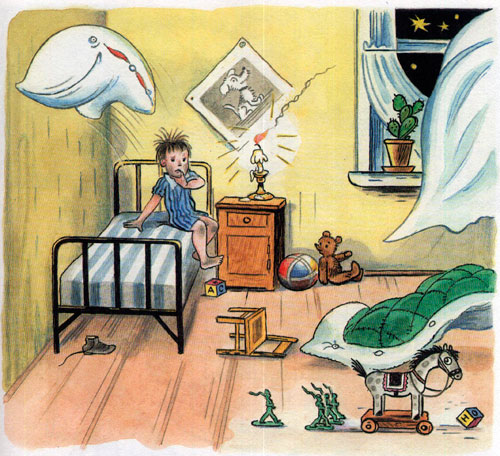
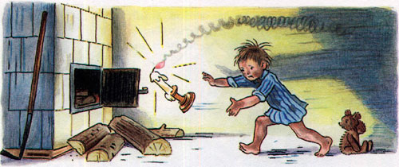
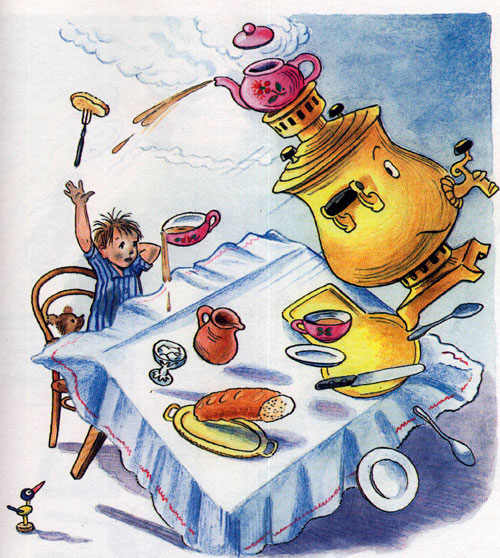
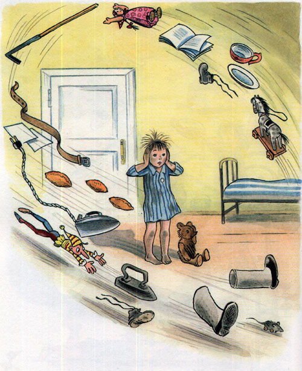
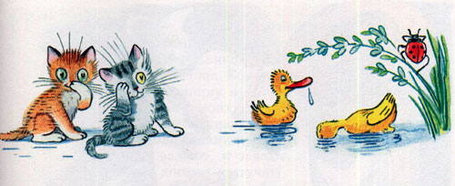
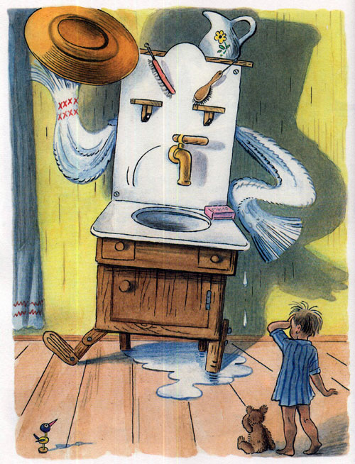

Корней Чуковский. "Мойдодыр"
Вниз
Начало сказки
Одеяло убежало, улетела простыня, и подушка, как лягушка, улетела от меня

Я за свечку, свечка в печку!

Я за книжку,
Та - бежать
И вприпрыжку
Под кровать!
Я хочу напиться чаю,
К самовару подбегаю,
А пузатый от меня,
Убежал, как от огня.

Появление Мойдодыра
Что такое, что случилось?
Отчего же
Всё кругом завертелось,
Закружилось и помчалось колесом?
Утюги за сапогами,
Сапоги за пирогами, Пироги за утюгами,
Кочерга за кушаком —
Всё вертится, И кружится,
И несётся кувырком.
Вдруг из маминой из спальни,
Кривоногий и хромой,
Выбегает умывальник
И качает головой:
"Ах ты, гадкий, ах ты, грязный,
Неумытый поросёнок!"


Ты чернее трубочиста,
Полюбуйся на себя:
У тебя на шее вакса,
У тебя под носом клякса,
У тебя такие руки,
Что сбежали даже брюки,
Даже брюки, даже брюки
Убежали от тебя.
Рано утром на рассвете
Умываются котята
И мышата, и утята,
И жучки, и паучки.

Я — Великий Умывальник, знаменитый Мойдодыр,
Умывальников Начальник и мочалок Командир!
Если топну я ногою, позову моих солдат,
В эту комнату толпою умывальники влетят,
И залают, и завоют, и ногами застучат,
И тебе головомойку,
Неумытому, дадут — Прямо в Мойку,
Прямо в Мойку С головою окунут!»
Он ударил в медный таз
И вскричал: «Кара-барас!»
И сейчас же щетки, щетки
Затрещали, как трещотки, и давай меня тереть,
Приговаривать:
«Моем, моем трубочиста чисто, чисто, чисто, чисто!


Продолжение сказки следует...
Интересные факты:
| Факт |
Описание |
| Автор |
Корней Чуковский |
| Год написания |
1923 |
| Мойдодыр |
В Москве в парке Сокольники установлен памятник Мойдодыру |
Другие сказки:
- Федорино горе
- Муха-Цикотуха
- Айболит
- Бармалей
- Тараканище
Посетите наш сайт с сказками Чуковского
Вверх